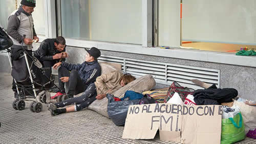

Real Chubut - Agencia de Noticias


Si ves al futuro dile que no venga

El Indec aceptó un aumento de 1,6 por ciento de la pobreza, que saltó al 27,3 en el primer semestre. El propio Macri reconoció “que tenemos meses difíciles por delante y las próximas mediciones van a mostrar más retrocesos” por el salto inflacionario y la profundización del ajuste.
El 27,3 por ciento de la población se encontró en el primer semestre en situación de pobreza por ingresos, lo cual representa una suba de 1,6 punto porcentual frente a los segundos seis meses de 2017, indicó ayer el Indec. La indigencia se ubicó en el 4,9 por ciento, 0,1 punto por encima del semestre anterior. El deterioro no se verifica en la comparación anual, en donde las cifras oficiales muestran una mejora de las condiciones sociales difícil de explicar, que sólo podría encontrar asidero en el hecho de que el derrape económico empezó en los segundos tres meses del período en cuestión (abril, mayo y junio). La aceleración inflacionaria en julio, agosto y los meses que siguen, junto al ajuste fiscal y la aplicación de una política monetaria ultra-ortodoxa por el segundo acuerdo con el FMI, ofrecen dudas en materia de estabilidad cambiaria pero certezas en las condiciones de vida: la pobreza va a seguir aumentando.
La mejora interanual de las condiciones sociales es muy llamativa porque al mismo tiempo el propio Indec midió una suba del desempleo en el segundo trimestre, al pasar de 8,7 por ciento en 2017 al 9,6 en 2018. Al mismo tiempo, los ingresos de los trabajadores no registrados, que componen un tercio de los empleados y pueden considerarse como un universo similar al de los pobres, crecieron apenas 21,6 por ciento en junio frente al mismo mes del año pasado, según el Indec. En el mismo período, el organismo calculó una suba de la canasta básica del 36,9 por ciento. Pese a ello, la pobreza bajó de 28,6 por ciento en el primer semestre de 2017 a 27,3 en igual período de este año, en tanto que la indigencia pasó de 6,2 a 4,9 por ciento.
El 41 por ciento de las personas de 14 años o menos se encontró en situación de pobreza en el primer semestre, seguido por el 32,9 por ciento entre quienes tienen de 15 a 29 años. En los partidos del Gran Buenos Aires, la pobreza alcanzó al 31,9 por ciento de la población, desde el 29,5 por ciento que registraba a finales de 2017. En el Conurbano se encuentran más de la mitad de las personas pobres que viven en los 31 aglomerados urbanos que releva el Indec. La ciudad con mayor nivel de pobreza es Santiago del Estero-La Banda, con el 44,7 por ciento, seguido de Corrientes (36,8). Por el contrario, los niveles más bajos se verificaron en Ushuaia-Río Grande, con el 10,4 por ciento de las personas, y en la Ciudad Autónoma de Buenos Aires, con el 11,2 por ciento.
En su breve mensaje de ayer, el presidente Mauricio Macri hizo referencia al aumento de la pobreza. “Cuando asumimos tuvimos momentos de avance, pero a raíz de esta tormenta los resultados van a tardar más. Nuestro único objetivo es que cada vez más argentinos puedan salir de la pobreza y vivir mejor”, afirmó. Enumeró que “realizamos un pago extraordinario para beneficiarios de la AUH y aumentamos los montos de programas sociales”. El incremento en los planes a cargo del Ministerio de Desarrollo Social siguen por debajo de la inflación de este año, con lo cual esos programas perderán poder adquisitivo. Los titulares de la AUH recibieron una suma fija de 1200 pesos por hijo en septiembre y obtendrán 1500 pesos adicionales en diciembre. Macri también mencionó la ampliación de Precios Cuidados, el programa de ferias en los barrios y los créditos de la Anses para jubilados (con tasas del 40 al 44 por ciento).
Más allá de la preocupación de Macri y de las aspirinetas que da el Gobierno, el programa económico de Cambiemos-FMI es el principal motor de crecimiento de la pobreza. En primer lugar, el reforzado ajuste fiscal se monta sobre la continuidad en la quita de subsidios a la electricidad, gas y agua y el transporte público, lo cual impacta con mayor fuerza en el bolsillo de los sectores de menores ingresos. Según el Indec, los gastos de servicios públicos vinculados al hogar subieron en el último año un 52,8 por ciento y el transporte, un 45 por ciento. Por otro lado, la brutal devaluación del peso tiene principal impacto sobre los alimentos, que subieron 3,3 por ciento en mayo, 5,2 en junio, 4 en julio y otro 4 por ciento en agosto. En tercer lugar, el gobierno expulsa mano de obra estatal y también de la obra pública, en el marco del recorte de gastos.
En los 31 aglomerados urbanos en donde el Indec releva la Encuesta Permanente de Hogares (EPH) se detectaron 7,6 millones de pobres. Si ese cálculo se extrapola a la población total, se supone que en el país hay más de 11 millones de pobres, unos 750 mil más que a fines de 2017. Ese número “va a crecer en los próximos meses”, según admitió el propio Macri, quien además reiteró que en el segundo trimestre de 2016, según la por entonces nueva metodología del Indec, la pobreza era del 32,2 por ciento, “que encima estaba disfrazada por la inflación contenida, un Estado que despilfarraba recursos y una política tarifaria insostenible”, se quejó, pese a que esas medidas evitaban una mayor pobreza.
El 27,3 por ciento de las personas en condición de pobreza equivalen al 19,6 por ciento de los hogares, que en promedio cuentan con 4,3 miembros y tienen un ingreso total familiar de 12.397 pesos. Esas familias están 7038 pesos mensuales por debajo del ingreso de casi 20 mil pesos necesario para acceder a los bienes y servicios que componen la canasta básica, aunque el dato excluye el pago del alquiler. Según la entidad Inquilinos Agrupados, el impacto del alquiler en relación a los ingresos es del 44,6 por ciento. En tanto, la Defensoría del Pueblo de la Ciudad de Buenos Aires calculó que el peso del alquiler sobre los ingresos alcanzó un máximo histórico del 50 por ciento. Es decir que si la familia en cuestión es inquilina, va a requerir unos 40 mil pesos para acceder al pago del alquiler y a canasta que le permita no caer en la pobreza.
Fuente: Pagina12